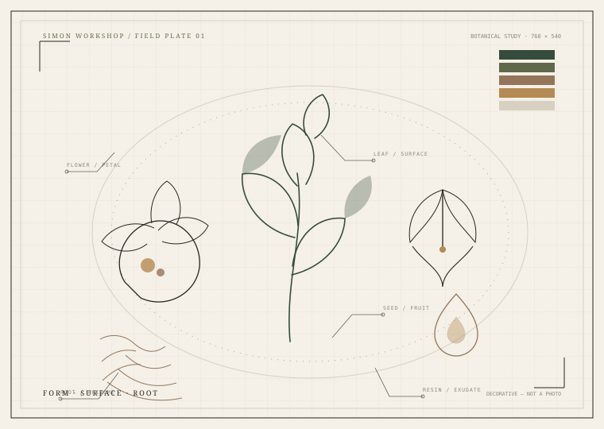

CHAPTER 01 · MATERIALS / 植物与人
天然芳香原料Natural Aromatics
从玫瑰、茉莉、檀香与乳香，到柑橘、香辛料、根茎与历史动物材料。这里记录的是“生物来源 + 使用部位 + 处理方式”的原料，不等于某一种提取物，也不等于某个分子。
气味标签是品鉴参考，不是化学分析；每类原料的提取物、成分、法规与安全信息需分别核对。缺失项显示为“未录入”，不做推测填充。
SPECIAL PROCESSED MATERIALS / 特殊与加工香料
烟熏、茶香、蜂蜜、海藻与焦油 SPECIALS
这一组是相对特殊的提取/加工材料，包括干馏焦油、茶与咖啡提取物、蜂蜜/海藻原精、干草原精等。它们仍属于“提取物/加工原料”层，不等于植物本身，也不等于单个分子。
特殊材料往往有更强的安全与法规边界：桦木焦油可能含热解副产物，烟草含尼古丁，海藻可能富集碘/重金属，蜂蜜涉及蜂产品过敏。不要把“天然/传统”当作安全保证。
READING THE RECORD / 怎么读
不要把“植物”与“瓶子里的东西”混为一谈 CAUTION

FIELD NOTE / 自绘视觉笔记
自然不是一种材料，而是一组关系
叶、花、种子、根与树脂只是入口。真正决定气味的，是物种、部位、产地、采收与提取方式。这张装饰图不指向某一具体植物，也不替代植物学插图。
全部插画由项目内 SVG 绘制；没有使用 AI 生成的假植物照片、假文物或伪造化学结构。
玫瑰是植物；玫瑰精油、玫瑰原精、玫瑰纯露、玫瑰浸膏是不同的提取物；香叶醇、香茅醇、苯乙醇是分子；一支玫瑰香水又是另一层作品。四者可以相关，但不能互相替代。
本页的“提取方式”只是可能的工艺方向，不代表该原料一定以这些形式商业化，也不代表任何具体产品可安全使用。
去分子数据库 →EXTRACT FORMS
五种“玫瑰”
精油、原精、浸膏、纯露、酊剂。它们的工艺、香气、用途与价格都不同。点击原料详情里的提取物标签查看分别记录。
选择 2–3 种原料进行比较